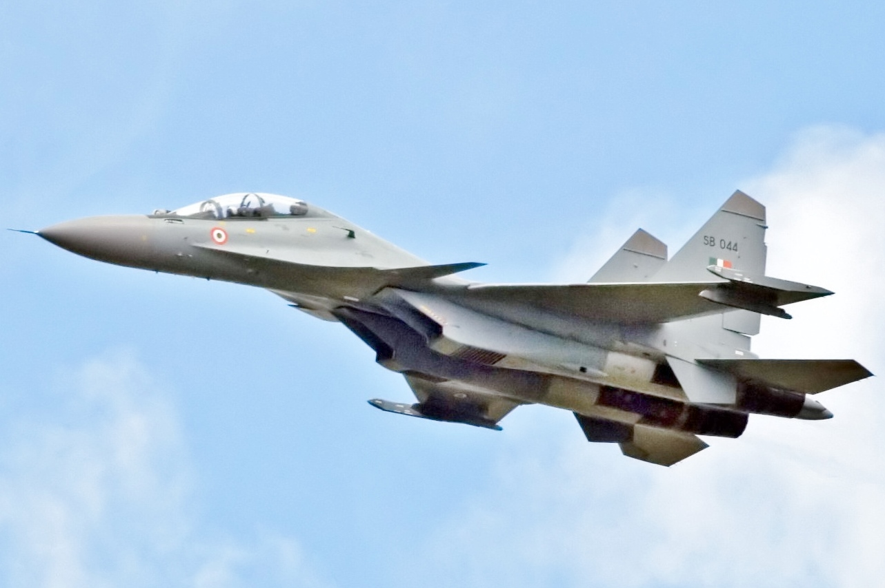

| SU-30MKI
The Sukhoi Su-30MKI[a] (NATO reporting name: Flanker-H) is a twinjet multirole air superiority fighter developed by Russia's Sukhoi and built under licence by India's Hindustan Aeronautics Limited (HAL) for the Indian Air Force (IAF). A variant of the Sukhoi Su-30, it is a heavy, all-weather, long-range fighter. Development of the variant started after India signed a deal with Russia in 2000 to manufacture 140 Su-30 fighter jets.[4] The first Russian-made Su-30MKI variant was accepted into the Indian Air Force in 2002, while the first Su-30MKI assembled in India entered service with the IAF in 2004.[6] The IAF has nearly 260 Su-30MKIs in inventory as of January 2020. The Su-30MKI is expected to form the backbone of the Indian Air Force's fighter fleet to 2020 and beyond. The aircraft is tailor-made for Indian specifications and integrates Indian systems and avionics as well as French and Israeli sub-systems. It has abilities similar to the Sukhoi Su-35 with which it shares many features and components. |
 |